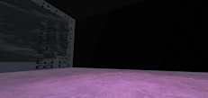

David Andrew Turner

Unity Project - Crash Material @ The Tote
Building a virtual live music experience where a sound source and space have been mixed using Unity's 3D Spacial Mixer and Reverb Zones. Based on your location and camera view you can hear panning, reverb blend, bass build up in the back corners of the room, and the transition from room sound to direct sound when closer to the 'screen' / portal. A very cool 2 minute experience that I hope to share properly - after figuring out how to export and embed the Unity web version!
This GIF is taken from a Unity game design exercise completed mid 2022.
Building a virtual live music experience where a sound source and space have been mixed using Unity's 3D Spacial Mixer and Reverb Zones. Based on your location and camera view you can hear panning, reverb blend, bass build up in the back corners of the room, and the transition from room sound to direct sound when closer to the 'screen' / portal. A very cool 2 minute experience that I hope to share properly - after figuring out how to export and embed the Unity web version!
Live Mixing, Live Multitrack Recording, Studio Record Engineer, Studio Mix Engineer (Music, Film, and Video), Sound Design
David Andrew Turner
Naarm / Melbourne, Victoria
turner.davidandrew@gmail.com